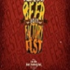
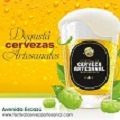
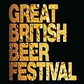

Eventos Nacionales
-

Festival de Cerveza Artesanal Beer Factory
Para los amantes de la cerveza y para celebrar el Saint Patrick Day, el restaurante Beer Factory llevará a cabo su primer festival del cerveza artesanal. El Beer Factory Fest será el 18 de marzo, en el parqueo destechado de Avenida Escazú, contiguo a los consultorios del Hospital Cima.
-

Festival de Cerveza Artesanal
El Festival Cerveza Artesanal es el evento más importante de la Asociación de Cerveceros Artesanales de Costa Rica. El festival tiene un enfoque educativo donde los visitantes puedan aprender sobre la cerveza artesanal como una bebida gourmet, su degustación, elaboración, cultura y disfrute con moderación en un ambiente divertido.
Eventos Internacionales
-
OktoberFest 2017
El Oktoberfest es la fiesta de cerveza más grande del mundo y uno de los mejores festivales en Alemania, pues cada año, más de 6 millones de visitantes de todas partes del mundo dejan sus actividades y se dirigen a Múnich para beber mucha cerveza, comer salchichas, y a pasarla de una manera inigualable.
-

Great British Beer Festival
Este festival se lleva a cabo en Londres. Se celebra del 2 al 6 de agosto en Earls Court. Se reunen más de 450 cerveceras británicas. El festival está organizado por la Campaña Real Ale-CAMRA y se espera que el festival del año que viene supere el récord de este año, con oferta de 800 cervezas reales diferentes, cervezas extranjeras, perrier y sidras.